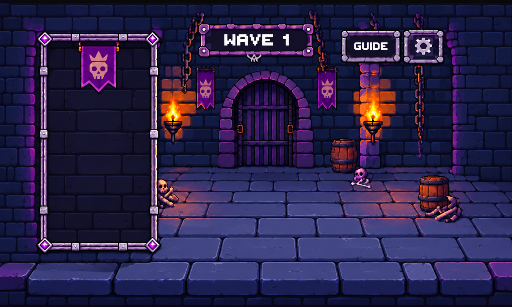
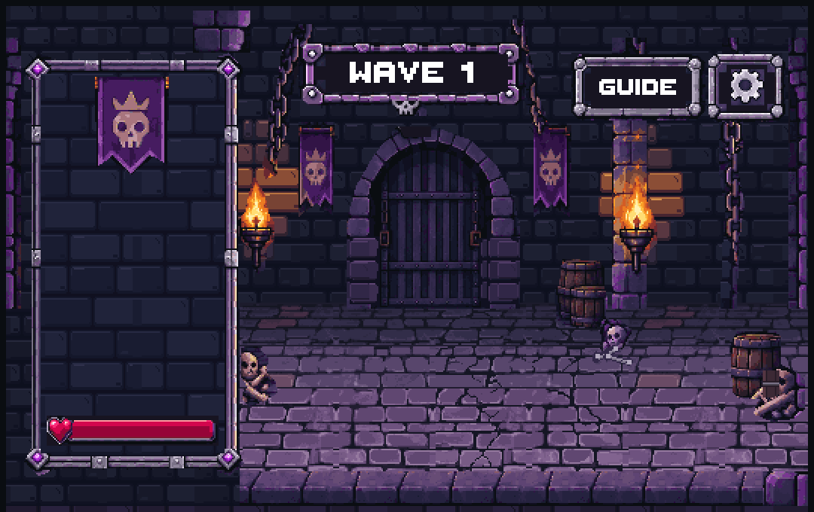
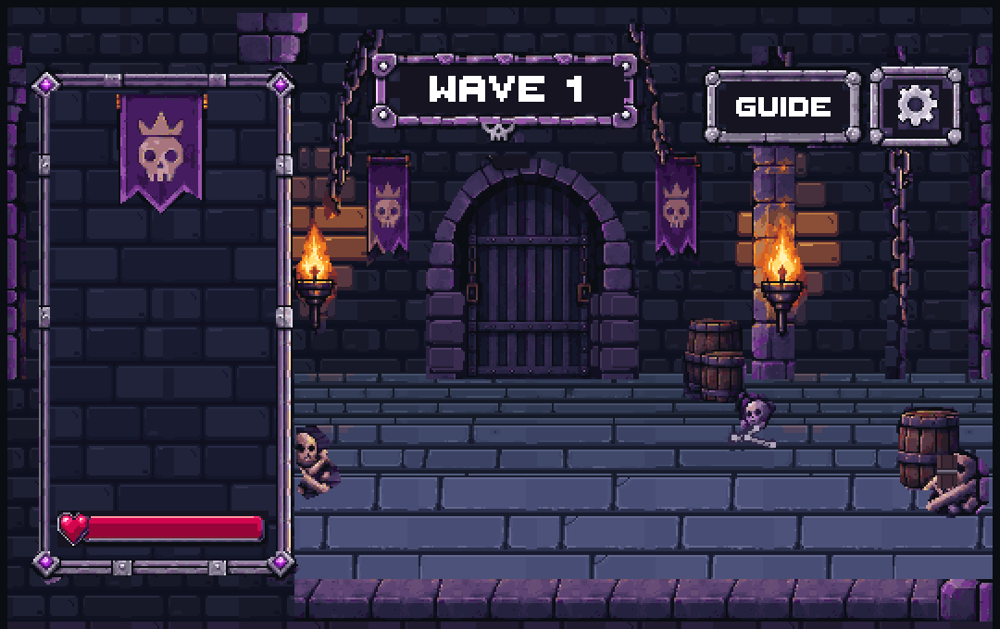
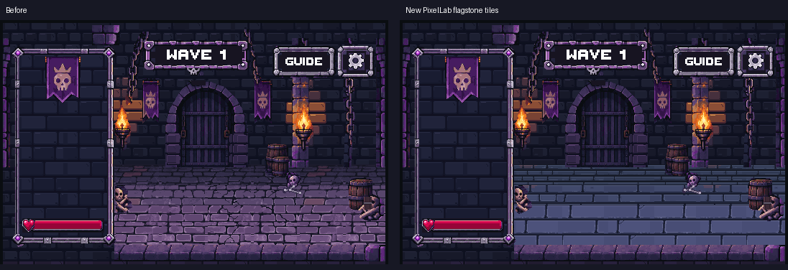
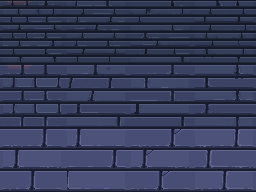
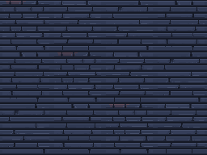
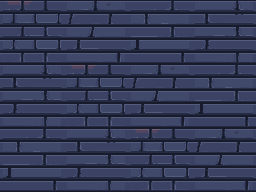
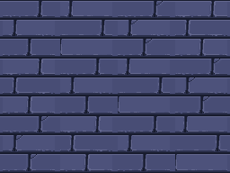

Broad, quieter blue-violet flagstones replace the dense cracked paving. Twelve native 64x64 floor modules cover rear, middle and near depth. Walls, torch lighting, props, frames and UI placement are preserved.




Native sheet 256x192, displayed at nearest-neighbor 3x. Each tile remains a separate editable LibreSprite source and 64x64 Unity PNG.

FloorBack

FloorMiddle

Floor

Verified native cels, PNGs and Unity copies; binary alpha; all tile-edge pairings; fresh two-test Unity run across four layouts. Render changes are confined to the floor. Visual approval remains pending.